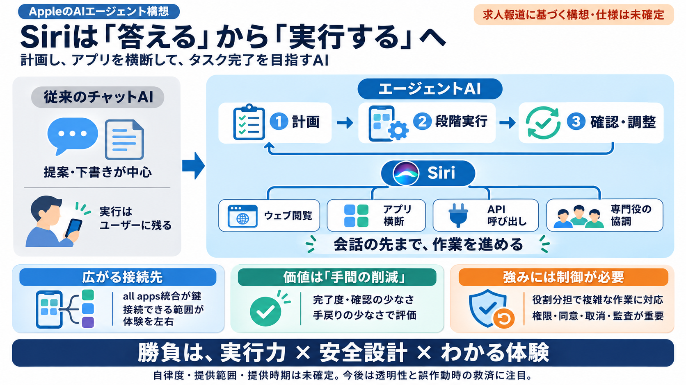

蘋果考慮另起爐灶 用外部人工智能模型來支持新版Siri
【彭博】— 為扭轉陷入困境的人工智能項目，蘋果公司考慮放棄自家開發的AI模型，轉而使用Anthropic PBC或OpenAI的AI技術來支持新一代Siri。 知情人士透露，蘋果已與這兩家公司討論將它們的大型語言模型用於Siri，並要求它…

会話だけでなく、計画して段階的に“実行”するAIへ。求人報道ベースで、Siriをエージェント化する方向性が示唆されています。
従来のチャットAIは、提案や文章生成は得意でも「実際に作業を完了させる」ところで人手が残りがちです。
エージェントは「次に何をするか」を考え、必要なら専門役（サブエージェント）に分担しながら進めます。
Bloombergが報じた（のち削除された）Appleの求人情報から、エージェントがウェブ閲覧・アプリ横断作業・外部サービス呼び出しを行える構想が読み取れます。
AppleはすでにAI強化版Siriを展開し、画面の情報を質問にしたり、アプリ横断のアクションを行う方向性が伝えられています。
iOS 27.3に向け、開発者がSiri AIを「すべてのアプリ（all apps）」に統合できる権限（Developer Preview）を提供する計画が触れられています。
Meta、OpenAI、Anthropic、Googleなど、エージェント製品がすでに挙がっており、Appleは追随・対抗の必要がある状況です。
サブエージェント協調は複雑タスクに強い一方で、役割が増えるほど誤作動や意図しない挙動のリスク管理が難しくなります。
この話は削除された求人情報と報道に依拠しており、断定ではなく「方向性の示唆」として捉えるのが妥当です。
利用者にとってのメリットは「どれだけ作業が完了するか」「どの程度の確認で止まるか」「手戻りが減るか」に集約されます。
エージェントが“実行”に踏み込むほど、権限管理・透明性・取り消し可能性、そして外部呼び出しに伴う規制論点が重要になります。
Appleの狙いはSiriのエージェント化。期待は妥当ですが、実用性と信頼性を左右する安全・権限・透明性の情報がまだ不足しています。
【彭博】— 為扭轉陷入困境的人工智能項目，蘋果公司考慮放棄自家開發的AI模型，轉而使用Anthropic PBC或OpenAI的AI技術來支持新一代Siri。 知情人士透露，蘋果已與這兩家公司討論將它們的大型語言模型用於Siri，並要求它…
The company outlined the plans in job listings added to its website this week. In one, Apple said it’s seeking a senior …
#Apple #Siri #WSJ ### Chapters [0:00] Apple and the personal AI agent boom [0:57] Siri in daily life [2:15] Apple HomeV…
分析認為，結合強大的 AI 後端、本地端運算工具、App Intents 架構與對話記憶功能，將使 iPhone、iPad、Mac 與 Apple Vision Pro 成為以 AI 為核心的裝置，同時兼顧隱私、安全與在地化處理需求。即使部…
本屆 WWDC 開場將由蘋果執行長庫克（Tim Cook）親自主持，預計介紹現有產品的 AI 功能升級。《CNN》分析，雖然硬體新品可能缺席，但 Apple Intelligence 的整合與新功能將成為全場焦點。 CNN：蘋果 AI 功…